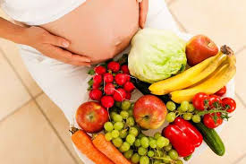

Kebutuhan Nutrisi Ibu Hamil
Masa kehamilan adalah periode krusial di mana kebutuhan nutrisi ibu meningkat signifikan untuk mendukung perkembangan janin dan menjaga kesehatan ibu sendiri. Asupan gizi yang seimbang dan mencukupi akan memengaruhi tumbuh kembang bayi di dalam kandungan dan mengurangi risiko komplikasi kehamilan.
Berikut adalah beberapa nutrisi penting yang harus diperhatikan selama kehamilan:
1. Asam Folat
Asam folat sangat penting untuk mencegah cacat lahir pada otak dan tulang belakang bayi (defek tuba neural). Sumber asam folat bisa didapatkan dari sayuran berdaun hijau gelap, buah jeruk, kacang-kacangan, dan sereal yang difortifikasi. Disarankan untuk mengonsumsi suplemen asam folat sejak sebelum hamil dan selama trimester pertama.
2. Zat Besi
Kebutuhan zat besi meningkat drastis saat hamil karena volume darah ibu bertambah. Zat besi diperlukan untuk mencegah anemia, yang bisa menyebabkan kelelahan ekstrem dan risiko persalinan prematur. Sumber zat besi terbaik antara lain daging merah tanpa lemak, unggas, ikan, bayam, kacang lentil, dan sereal yang difortifikasi. Konsumsi vitamin C bersamaan dengan zat besi dapat membantu penyerapan.
3. Kalsium
Kalsium vital untuk pembentukan tulang dan gigi bayi. Jika asupan kalsium ibu kurang, tubuh akan mengambil kalsium dari tulang ibu. Sumber kalsium meliputi produk susu (susu, yogurt, keju), brokoli, kale, dan susu kedelai yang difortifikasi.
4. Protein
Protein adalah "blok bangunan" tubuh dan sangat penting untuk pertumbuhan jaringan bayi, termasuk otak, darah, dan otot. Ibu hamil disarankan untuk meningkatkan asupan protein dari daging tanpa lemak, ikan, telur, produk susu, serta sumber nabati seperti tahu, tempe, dan kacang-kacangan.
5. Vitamin D
Vitamin D bekerja sama dengan kalsium untuk membangun tulang dan gigi bayi yang kuat. Paparan sinar matahari pagi adalah sumber alami vitamin D, serta bisa didapatkan dari ikan berlemak (salmon, tuna) dan susu yang difortifikasi.
Selalu konsultasikan dengan dokter atau ahli gizi Anda mengenai kebutuhan nutrisi spesifik selama kehamilan. Suplemen mungkin diperlukan untuk memastikan semua kebutuhan gizi terpenuhi.
Stimulasi Tumbuh Kembang Bayi

Ada beberapa bentuk stimulasi yang dapat diberikan pada periode emas, sesuai dengan perkembangan usia anak:
1. 0–3 bulan
Memeluk, menggendong, menatap mata bayi, mengajak senyum, meniru ocehan dan mimik muka bayi, membunyikan berbagai suara atau musik secara bergantian, menggantung dan menggerakkan benda berwarna terang atau berbunyi, menggulingkan bayi ke kanan-ke kiri, tengkurap, telentang, serta mengajak bayi mengamati benda-benda dan keadaan di sekitarnya.
2. 3–6 bulan
Bermain petak umpet, mencari sumber suara, menirukan suara dan kata, melihat wajah bayi dan ibu di cermin, melihat-meraih, dan menendang mainan gantung, memperhatikan benda bergerak, serta meraba dan merasakan berbagai bentuk permukaan dan tekstur.
3. 6–9 bulan
Memanggil nama anak, mengajak bersalaman, tepuk tangan, membacakan dongeng, merangsang duduk, serta melatih berdiri sambil berpegangan.
4. 9–12 bulan
Mengulang-ulang nama ibu, ayah, atau kakak, memasukkan mainan ke dalam wadah, minum dari gelas, menggelindingkan bola, melatih berdiri, serta berjalan dengan berpegangan.
Mengapa Imunisasi pada Anak Penting?
Imunisasi wajib pada anak memiliki berbagai fungsi penting yang berkontribusi terhadap kesehatan individu dan masyarakat. Berikut adalah beberapa fungsi utama dari imunisasi wajib pada anak:
1. Mencegah Penyakit Menular Berbahaya
Imunisasi dapat melindungi anak dari berbagai penyakit menular yang serius dan berpotensi fatal, seperti campak, polio, difteri, pertusis (batuk rejan), tetanus, hepatitis B, dan lain-lain. Jika anak tidak diberikan imunisasi dan terjangkit penyakit tersebut, kemungkinan komplikasi serius seperti kecacatan permanen dan kematian dapat terjadi.
2. Melindungi Masyarakat Melalui Herd Immunity
Imunisasi dapat membantu menciptakan kekebalan kelompok (herd immunity), suatu kondisi di mana penyebaran penyakit di masyarakat dapat diminimalisir karena sebagian besar populasi telah divaksinasi. Kondisi ini sangat penting untuk melindungi masyarakat yang tidak dapat divaksinasi, seperti bayi yang terlalu muda atau individu dengan kondisi medis tertentu.
3. Mengurangi Beban Ekonomi dan Sosial
Penyakit yang dapat dicegah dengan vaksin seringkali memerlukan perawatan medis yang mahal dan jangka panjang. Oleh karena itu, imunisasi dapat mengurangi biaya perawatan kesehatan dan mengurangi hilangnya produktivitas akibat penyakit, baik pada tingkat keluarga maupun masyarakat luas.